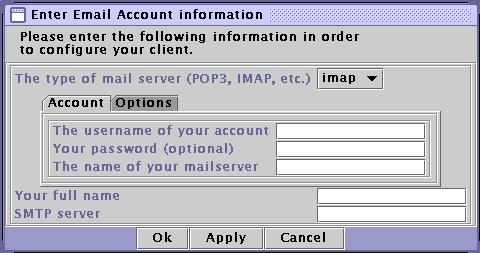
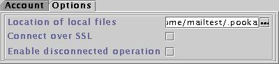
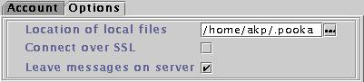

Configuring Your Email Account

The first thing that you will need to do is to tell Pooka where your
email is stored. Pooka supports three kinds of email accounts: Post Office Protocol version 3 (POP3, or POP),
Internet Mail Access Protocol (IMAP), or local UNIX
mail files (mbox).
The second thing that you will need to configure is your outgoing mail
information. For that you need (at least) three pieces of information:
your email address, your personal name, and the name of your SMTP server.
Pooka will use your connection information to provide an email address; if
this information is incorrect (if, for instance, your username is me
, your IMAP server is imap.example.com, but your correct
email address is actually me@example.com instead of
me@imap.example.com), you can change it in the User Configuration
screen.
- Your full name
- This will be put in the Personal Name field of outgoing email. It can
be whatever you want, but it's a good idea to make it something that will
be recognizable to the recipients of your email.
- SMTP server
- The server that will accept outgoing mail. This should be provided
by your ISP.
Configuring IMAP mailboxes
There are three pieces of information needed to configurate an IMAP mailbox:
the username of your account, the password for your account (optional, see
below), and the name of the server which stores your email. All of this
information should be available from your ISP.
You can either enter your account's password in at this time, or you can
leave this field blank. If you leave the field blank, then you will be
prompted for your account password every time you run Pooka. However, if
you do enter your password, your password will be stored in your Pooka
Configuration file. While the password will be encoded such that a casual
reading won't reveal it, a person could use the Pooka source code in order
to decrypt the string into your actual password.
IMAP options

- Location of local files
- Where local files will be held. These files include the approved SSL
certificates files (if connecting over SSL), an Address Book file, and
any locally cached messages (if using disconnected IMAP). This will also
be the default location for the local Sent and Outbox folders.
- Connect over SSL
- SSL (Secure Sockets Layer) provides a secure, encrypted connection
between two machines. IMAP connections by default send your account
information across the network in plaintext, and thus are fairly insecure.
So if your ISP offers IMAP over SSL, it is usually a good idea to take
advantage of it. Note that Pooka uses the default IMAPS port (port 993)
for IMAP over SSL connections; if your ISP puts their IMAP/SSL connections
on a different port, you will need to configure this in the Store Configuration
screen.
- Enable disconnected operation
- By default, IMAP mail is stored on the remote server rather than downloaded
onto the client machine. This means that, while you save time and disk space
by not having to download and store old messages on your own computer, you
sacrifice the ability of read your email while the network connection to
your mail server is unavailable. Enabling disconnected operation makes it so
Pooka stores a copy of your messages locally on your client, thus allowing
you to read your messages offline.
Configuring POP3 Accounts
There are three pieces of information needed to configurate an IMAP mailbox:
the username of your account, the password for your account (optional, see
below), and the name of the server which stores your email. All of this
information should be available from your ISP.
You can either enter your account's password in at this time, or you can
leave this field blank. If you leave the field blank, then you will be
prompted for your account password every time you run Pooka. However, if
you do enter your password, your password will be stored in your Pooka
Configuration file. While the password will be encoded such that a casual
reading won't reveal it, a person could use the Pooka source code in order
to decrypt the string into your actual password.
POP3 Options

- Location of local files
- Where local files will be held. These files include the messages
downloaded from the POP server, as well as the approved SSL
certificates files (if connecting over SSL) and an Address Book file.
- Connect over SSL
- SSL (Secure Sockets Layer) provides a secure, encrypted connection
between two machines. POP3 connections by default send your account
information across the network in plaintext, and thus are fairly insecure.
So if your ISP offers POP3 over SSL, it is usually a good idea to take
advantage of it. Note that Pooka uses the default POP3S port (port 995)
for POP3 over SSL connections; if your ISP puts their POP3/SSL connections
on a different port, you will need to configure this in the Store Configuration
screen.
- Leave messages on server
- Pooka can either be configured to download messages and then delete them
off the server immediately, or to leave the messages on the server until
they are deleted on the client.
Configuring local (mbox) stores
- Location of inbox file
- Where your local mail spool is located. Usually something like
/var/spool/mail/username
- Location of local files
- Where local files will be held. These files include any personal mail
folders that you create, as well as the approved SSL
certificates files (if connecting over SSL) and an Address Book file.